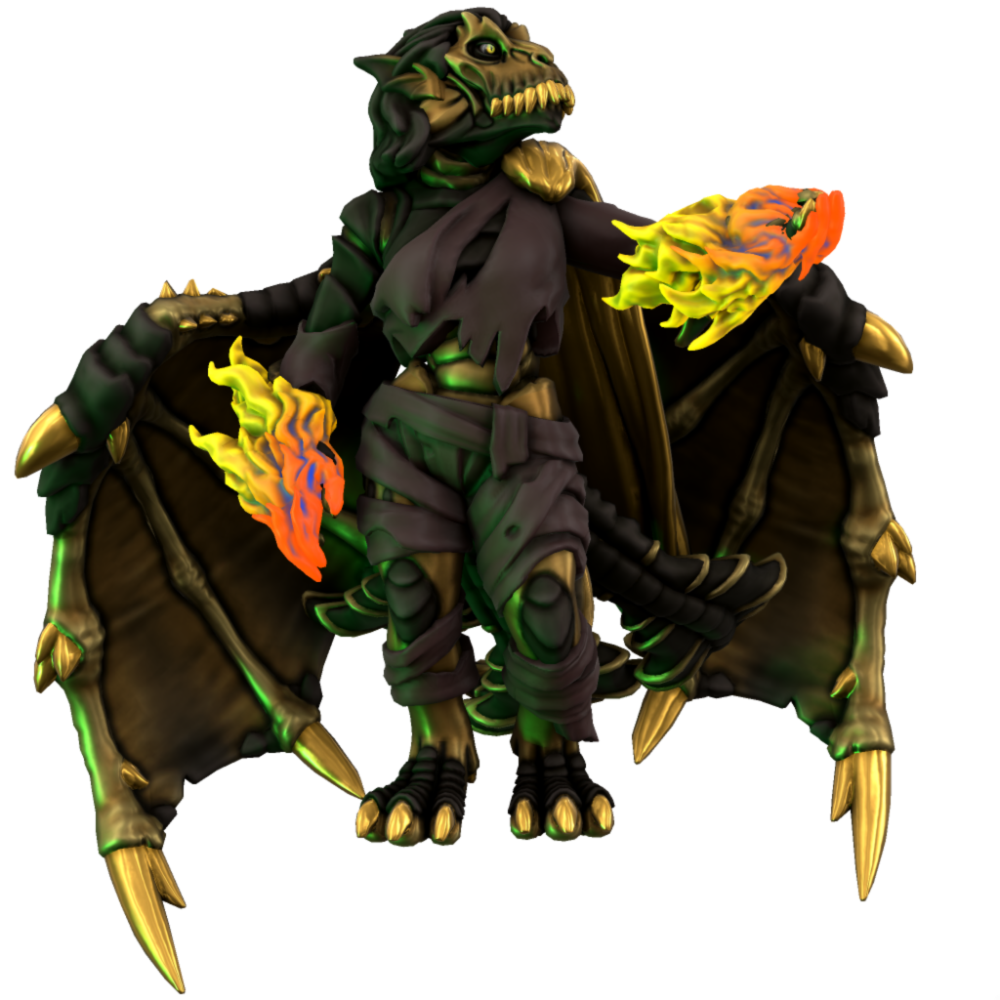

Avikath

Malefix of greed
Avikath is manifest from the greed of mortals. All who lust for gold, power, sexual conquest... These are her people.
In physical form, she manifests as a draconic figure, her scales made of pure gold, her body of coal. She dresses in pauper's rags, tattered scraps of leather ill befitting a gleaming visage of wealth such as she.
Avikath accepts the title Mother of Dragons, as all dragons in Iuncterra were birthed by her. As greed draws mortals to the mountains in search of hiddent riches, Avikath is drawn to mountain fey. It is her union with these fey which produces dragons.
Avikath has not given birth for several millenia, her attention in more recent years being drawn to the ever more ravenous greed of mortal rulers, them having developed a taste for acrueing obscene wealth. Without her dalliances with the mountain fey, dragon numbers are dwindling as they cannoy reproduce of their own accord.
Names
| Language | Name | Pronunciation |
|---|---|---|
| Common | Avikath | ævɪkæθ |
| Dracean | Avika | ævikæ |
| Uttic | Aavjath | avjæθ |
| Noordic | Avjath | ævjæθ |
| Jotic | Avak | ævæk |
| Atkani | Avak'ib | ævæk'ib |
| Savonic | Ib'Avik | ib'ævik |
| Kushite | Ibl'Avraq | ɪbl'ævræk |
| Loxan | Avraq | ævræk |
| Parbati | Avhara | ævharæ |
| Scutian | Avra | ævræ |
| Servian | Avjak | ævjæk |
| Kypritic | Avikos | ævikos |
| Ataithan | Áidh | æɪv |